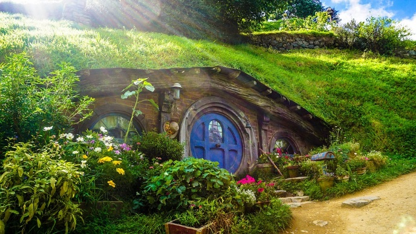
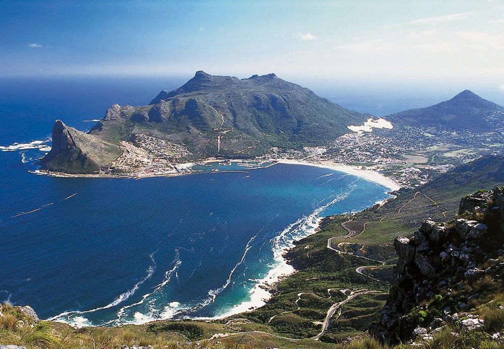

Eko turizam
Ekološki turizam ili eko-turizam se može definirati kao turizam u kojem osviješteni putnici podupiru zaštitu prirode i okoliša na destinaciji koju su odabrali, kao i lokalnu zajednicu i njezinu kulturnu baštinu. Ili, drugim riječima, takvi turisti ne razmišljaju samo o tome da za uloženi novac dobiju što više, već žele što manje utjecati na područje koje su odlučili posjetiti, pritom pazeći da i lokalna zajednica zauzvrat dobije prihod koji joj osigurava egzistenciju. To znači da će preferirati konzumaciju domaćih, autohtonih proizvoda, po mogućnosti iz ekološkog, odnosno organskog uzgoja, kao i upoznavanje s običajima i kulturom tamošnjeg stanovništva. Često se takav oblik turizma veže uz posjet nekim zaštićenim prirodnim vrijednostima, kao što su primjerice nacionalni parkovi. Takvi putnici će voditi računa i o načinu prijevoza pa će se mnogi, imaju li mogućnosti, odlučiti za željeznicu, budući da ona manje utječe na okoliš od automobila.

Romantični krajolici Novog Zelanda pretvaraju ovu destinaciju u pravu poslasticu za ljubitelje eko turizma. Parkovi s divljim životinjama, rezervati divljih životinja kao što su Willowbank te Orhana Wildlife Park oduševit će sve koji se požele približiti divnim životinjama ili ih fotografirati. Grad Christchurch smješten između Tihog oceana, rijeke Avon te Port Hillsa još je poznatiji po svom drugom imenu- “Grad vrtova” jer se na ovom području nalazi veliki broj botaničkih vrtova te parkovi poput Victorie i Hagleyja. Osim toga, u Northlandu se nalazi 150 otoka različite veličine koji su se nadvili nad dojmljivo čistom vodom Zaljeva otoka. Paihiju, Nacionalni rezervat Waitangi, Morski rezervat Poor Knights samo su dio bogate ponude zaljeva. Najpopularnija atrakcija za posjetitelje je promatranje dupina i kitova u njihovom prirodnom okruženju. Uz ribolov, planinarenje, bicikliranje, romantične šetnje i vožnju brodićem, ovo mjesto čini se kao idealna zona za sve koji uživaju u prirodi i životinjama

Južnoafrička Republika je mjesto koje krije brojne prirodne ljepote i netaknute krajolike. Botanički vrtovi Kirstenbosch sadrže neke od najrjeđih biljaka na svijetu, a surfanje, ronjenje te uživanje u drugim vodenim aktivnostima Atlantskog oceana posebno su privlačne aktivnosti za ljubitelje aktivnog turizma. U Nacionalnom parku Addo Elephant posebno su zanimljivi afrički slonovi, a u iSimangaliso Wetland Parku vodenkonji. Park Ukhahlamba Drakensberg jedno je jako privlačno mjesto za planinarenje na nadmorskoj visini iznad 3000 metara. Turisti ovdje posjećuju najjužniju točku Afrike – Agulhaški rt, ali i rt Dobre nade koji se nalazi 150 kilometara sjevernije.